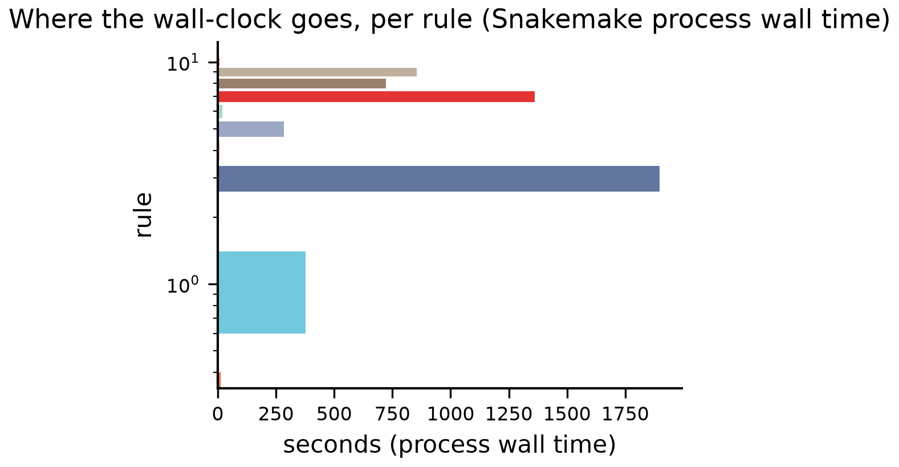
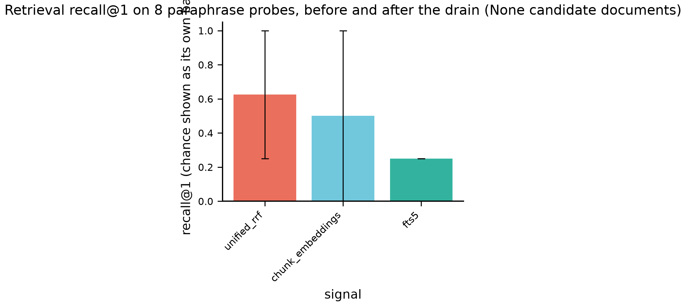
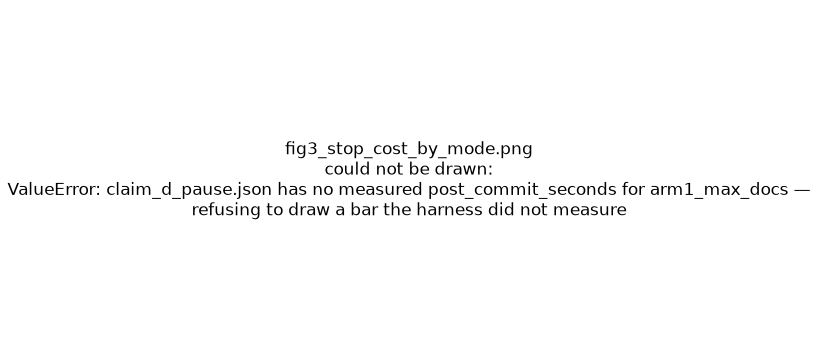
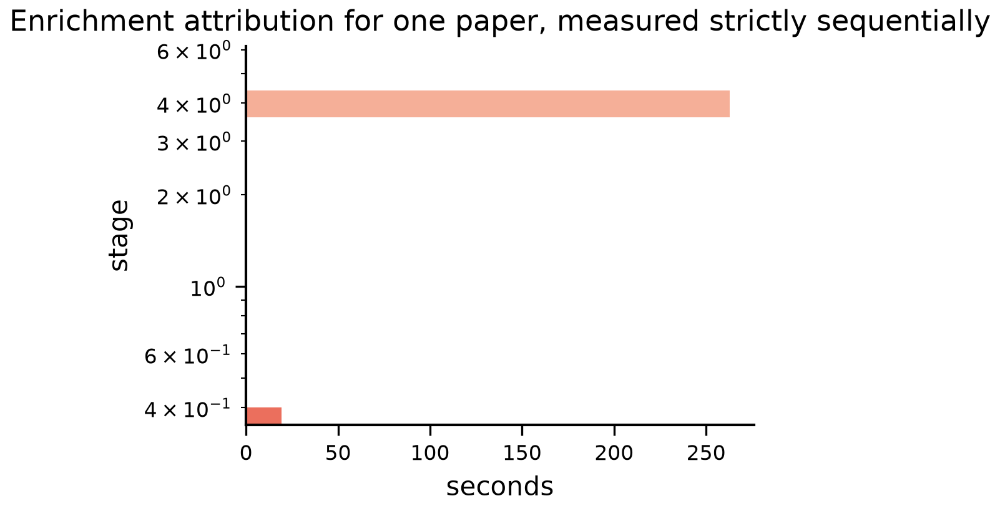

Deferred ingestion on the real path
A pre-registered, ledger-instrumented validation of the document_store drain
against real arXiv PDFs and a local Ollama.
- run_id:
2026-08-01T09:18:21.148823+00:00-b5c34a3 - git:
b5c34a3onexp/docstore-deferred-validation(working tree DIRTY) - host: macOS-26.6-arm64-arm-64bit
Models (pinned by digest, not by tag)
| role | tag | digest | quantisation |
|---|---|---|---|
| — | gemma4:26b-nvfp4 |
c8656f50f0a6d864cffd |
nvfp4 |
| — | embeddinggemma:latest |
85462619ee721b466c59 |
BF16 |
Scoreboard
28 PASS · 0 FAIL · 0 INCONCLUSIVE · 0 NOT MEASURED
| id | claim | metric | threshold | measured | verdict |
|---|---|---|---|---|---|
H-G |
enrichment gate | gate_topics_count |
>= 1 |
3 | PASS |
H-a1 |
a | defer_ollama_requests |
== 0 |
0 | PASS |
H-a2 |
a | defer_state_violations |
== 0 |
0 | PASS |
H-a3 |
a | defer_median_seconds |
< 1.0 |
0.0093 | PASS |
H-a3 |
a | defer_now_ratio |
< 0.02 |
2.464e-05 | PASS |
H-a4 |
a | defer_fts_misses |
== 0 |
0 | PASS |
H-a5 |
a | source_fts_hits |
== 0 |
0 | PASS |
H-b |
b | drain3_enriched |
== 0 |
0 | PASS |
H-b |
b | drain3_ollama_requests |
<= 2 |
0 | PASS |
H-b |
b | fingerprint_moved |
== 0 |
0 | PASS |
H-c1 |
c | ledger_entries |
== 3 |
3 | PASS |
H-c1 |
c | ledger_duplicates |
== 0 |
0 | PASS |
H-c1 |
c | resume_converted |
== 2 |
2 | PASS |
H-c2 |
c | markdown_sha_stable |
== 1 |
1 | PASS |
H-c3 |
c | sqlite_ok |
== 1 |
1 | PASS |
H-c4 |
c | — |
observation | 0 | OBSERVATION |
H-d1 |
d | pause_midstage_documents |
== 0 |
0 | PASS |
H-d1 |
d | pause_discarded_seconds |
== 0 |
0 | PASS |
H-d2 |
d | max_seconds_overrun_documents |
<= 1 |
0.5481 | PASS |
H-d3 |
d | first_processed_is_source |
== 1 |
1 | PASS |
H-d4 |
d | kill_repeated_stages |
<= 1 |
1 | PASS |
H-e1 |
e | post_chunk_recall_at_3 |
>= 1.0 |
1 | PASS |
H-e1 |
e | pre_chunk_recall_at_3 |
== 0.0 |
0 | PASS |
H-e2 |
e | enrichment_structure_violations |
== 0 |
0 | PASS |
H-f1 |
f | failed_count |
== 4 |
4 | PASS |
H-f1 |
f | errors_without_type_name |
== 0 |
0 | PASS |
H-f2 |
f | retry_wrong_stage |
== 0 |
0 | PASS |
H-f2 |
f | stage_test_converter_calls |
== 0 |
0 | PASS |
H-x |
cross-cutting | report_db_mismatches |
== 0 |
0 | PASS |
Cross-cutting observations
| observation | value | why it matters |
|---|---|---|
| max concurrent Ollama requests in flight | 8 | _run_phase2 fans out under Semaphore(_INGEST_CONCURRENCY=5); this is what the library actually does, reported not changed |
| doc-embedding skip rate | 0 | _embed_doc_level swallows an oversized-input failure with an INFO log, so one of the four RRF signals can go dark without an error |
| preflight tax (seconds / requests) | 1.847 / 2 | what a cron-driven drain pays on every wake-up |
| checkpoint savings | 14.98 s | conversion seconds not repeated after the hard kill |
| concurrency speedup | 1.067 | ~1.0 means the semaphore is decoration against an Ollama that serialises same-model calls |
| report-vs-database mismatches (H-x) | 0 | the ProcessReport is what a cron job logs; disagreement makes every operational claim unsafe |
| two-transaction window observed (H-c4) | no | _convert_document commits markdown then flips status separately |
| SIGTERM to exit | 67.57 s | size a launchd/cron shutdown grace period with this |
Noise band
Relative spread of per-call LLM latency: 1.413 over 37 samples. Any wall-clock ratio inside that band is reported INCONCLUSIVE, never rounded up to PASS.
What is NOT reproducible here
- LLM-generated metadata CONTENT (nondeterministic even at temperature 0)
- wall-clock timings (machine- and load-dependent; ratios are published instead)
- Docling markdown bytes across docling versions or machines
Exactly three things are claimed deterministic:
- queue state transitions
- conversion bytes within a fixed docling version, within one run
- chunk boundaries for a fixed input and chunker configuration
Figures




Provenance and integrity
results/provenance.json— git, versions, model digests, allowlisted envdata/REGISTRY.json— per-paper sha256 + URL provenanceresults/validation.json— schema + referential integrity (exits 1 on violation)results/MANIFEST.json— sha256 of every artefact with its producing rule